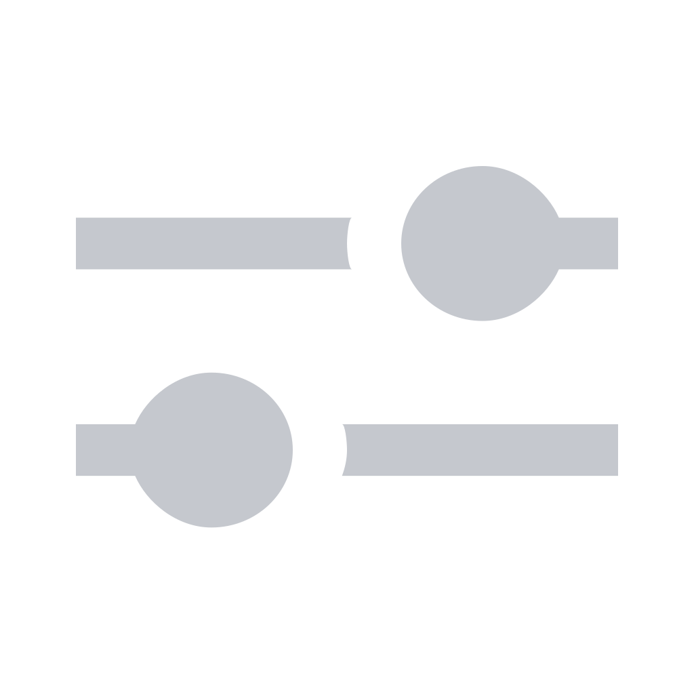

wifi


end box of
bar/Bar.tsx, immediately left of NetworkStatus. The two
connectivity glyphs sit together because they answer the same question. Left-click records the
pointer x and opens the popup; that x is what makes the popup follower-anchored.
bar-off · bar-idle · bar-connected ·
bar-active · bar-anchorbar-off
Variant bluetooth/bluetooth-off-default. The real staged asset is
settings-panel/bluetooth-off.svg (foreground #c2c2c5); the shipped bar
template adds the slash so off reads as shape. The panel's off treatment is the opposite —
a tint plus opacity: .4 — because the panel glyph sits on opaque glass and is never
retargeted. Both are correct for their backdrop.
bar-idle
Variant bluetooth/bluetooth-default — the bare rune, tinted @color_13
(#dbab67) at panel rendering; guard-managed to a wallpaper-safe token at bar rendering.
No dot. A dot here would say "something is happening" when nothing is.
bar-connected
Variant bluetooth/bluetooth-connected-default — rune plus a hollow 8px dot,
the additive signal convention from .audio-live-dot. This is the one state that
distinguishes "a device is paired up" from "the dot is decorative".
bar-active
Variant bluetooth/bluetooth-active-default — rune plus a filled dot.
This is the state Wi-Fi cannot express. "Your audio is on Bluetooth right now" is the
single most valuable thing a Bluetooth bar indicator can say, and it is exactly the fact that
`routeAudioToDevice` used to leave invisible — the headphones read "Connected" while the sound
stayed on the speakers. It needs the new bluetoothAudioTarget accessor.
A second connection while one is routed keeps the indicator on active: the routed
device wins.
bar-anchor

How it works (identical to bar/widgets/network.tsx). A
Gtk.EventControllerMotion records get_position()[1] on every hover and
does not claim clicks, so the button's own onClicked still fires. The click
stores that x into bluetoothIconX before toggling, and
BluetoothPopup computes
marginLeft = iconCentre − 156, clamped to [8, monitorWidth − 320].
Click the glyph above to see the real 312 px popup drop beneath the pointer — and
click it again to watch the same-spot collapse work.
A null x (programmatic open) falls back to the right edge, exactly as
WifiPopup does.
OutputIndicator has a right-click (pavucontrol) and a scroll (volume).
NetworkStatus has a right-click (wifitui). Bluetooth deliberately has
neither: there is no continuous value to nudge, and the one external tool that matters
(bluetoothctl) is already one click away in the popup's footer row — which is where
the Wi-Fi popup puts nm-connection-editor. A gesture that exists on two of three
connectivity glyphs and silently does nothing on the third is worse than no gesture.
All four variants declare color_mappings at group level only, and
"bluetooth" is added to BAR_GROUPS in
src/runtime/src/runtime/domain/icon_contrast.py. On a light wallpaper the runtime
retargets the group's COLOR_FOREGROUND to a darker palette slot before ITR
renders — so all four stay legible. The mock approximates that retarget with a CSS
filter: brightness(.62); the real path is a re-render, not a filter.
bt off bt on
bt on guard-managed → retargeted → legible
guard-managed → retargeted → legible